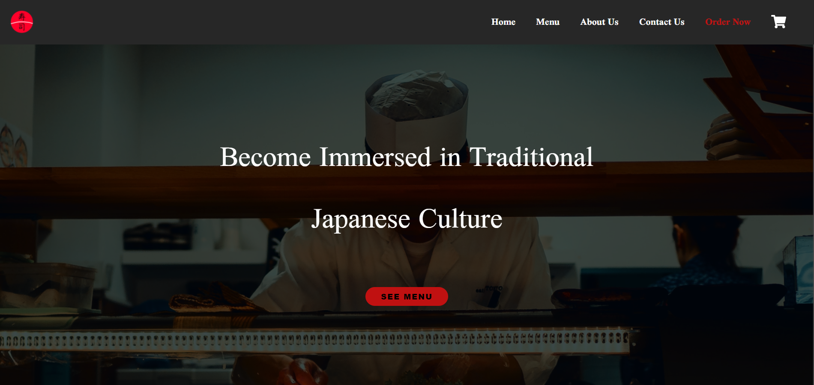
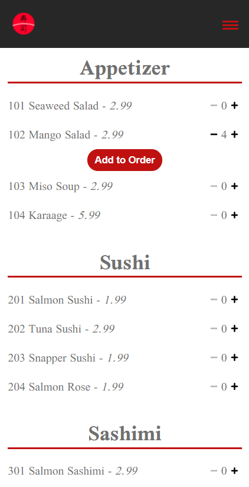
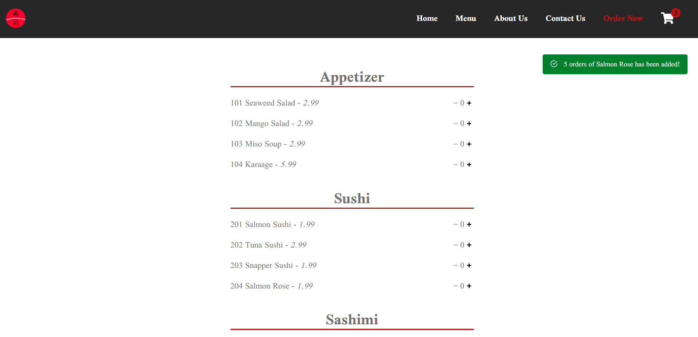
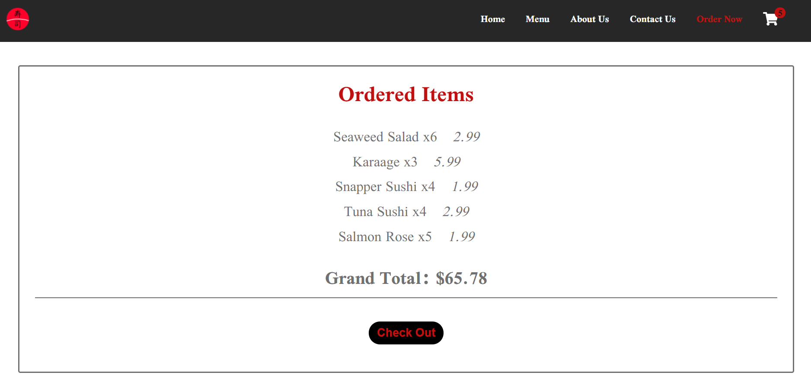

Here is my TKSushi Website
Fullstack Application

Fullstack Application
This is a frontend application built using React, Redux, CSS, and Adobe XD. It has a very minimalistic design with simple and concise UI for easy navigation. It has all the basic functionalities of a modern restaurant website with carefully organized code to make scalability and adding newer components easier.
This application is fully responsive allowing users to navigate with ranges of devices such as, mobile, tablet, and desktop.
The current state is managed by Redux making it easy to keep track of users orders.
This app also has notifications for the users to assure their items are being properly added to the basket. The shopping cart on the top right shows how many items are currently added in the basket. In the checkout page, all the items with its quantities are clearly shown with the grand total to let the user know the final price.
Check out the demo or the code by clicking the button below.